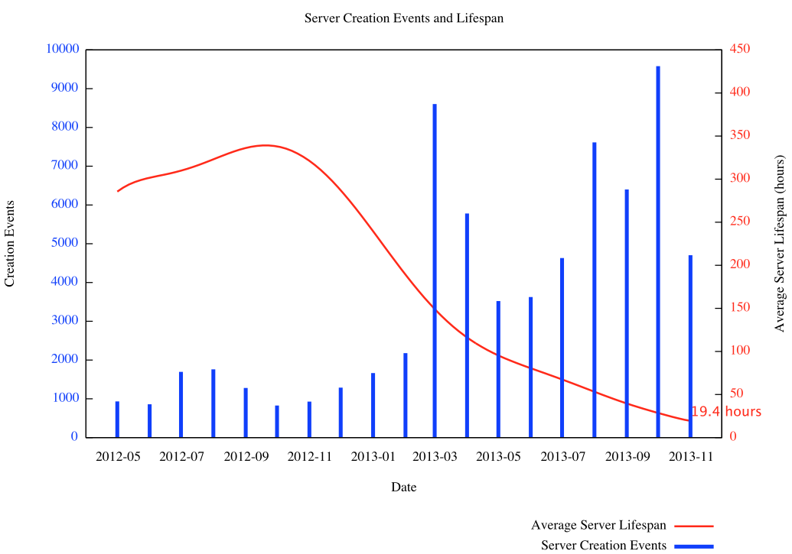

Server Lifetime as SDLC Metric
Tue 08 July 2014 by Greg MoselleEarlier we looked at gaining insight into the DevOps-ification of an organization.
Let's look at using server "lifespan" as a metric for gauging the cloudiness of a software development life cycle (SDLC) work flow.
Learn to treat servers like code, strive to automate server deploys and you will soon find yourself telling your servers:
I like you, that's why I'm going to kill you first.
Ephemeral Embrace
The ephemeral nature of cloud servers is a concept that seems like it should be straightforward to adopt, but in my experience embracing the ephemerality of a VM is something most organizations/teams are not yet ready to do. Why not? I have a couple of ideas:
They have immature infrastructure management practices.
Even organizations that have largely virtualized their infrastructure continue to enforce draconian change control and procurement policies. Some managers with whom I've interacted have indicated it takes 9 days from the time a user requests a virtual machine to the time the resource is delivered to the end user. 9. Days. We'd bleed personnel if it took them more than 9 minutes to get a VM.
If it takes 9 days to obtain a needed resource, as a user I'd sure as hell hold onto that VM for as long as I could.
The same manager responsible for the 9-day procurement time is also convinced that if users are able to provision their own virtual severs, they would provision ad infinitum. I wonder why...
They have immature SDLC work flows.
On my team, the build-test-dev cycle is a continuous efficiency loop. To build artifacts from source, deploy, and test should take less than 15 minutes. That's including the provisioning of a cloud server upon which the code is deployed. Want to reproduce a problem? Pull the tag, deploy, and build.
Many organizations/teams implement this cycle on static server farms, and miss out on leveraging the benefits of using configuration management and ephemeral cloud servers to implement a true end-to-end development cycle.
Measuring Ephemerality
One prominent software company uses server lifespan as a measure of the efficiency of their SDLC processes.
Their target server lifespan is 30 hours. That is, from the time a cloud server is instantiated to the time it is destroyed, no more than 30 hours should have elapsed.
And when the servers are destroyed, that means destroyed, not snapshotted, not imaged, not archived. Really gone.
For how many hours has your development environment been in existence?
The maturity of a cloudy SDLC ensures a repeatable, collaborative, iterative, fail-friendly approach to software development.
Cattle not Pets
Over at Engine Yard there's a good post about cloud servers and how treating them as ephemeral entities can transform software development work flows.
My colleague at blog dot lusis advocates for the "get it working, then tear it down, then get it working again" approach until the process is fully repeatable.
Server builds not working? Shoot the server in the head and do it again until it works.
As an animal lover I'm not the biggest fan of these analogies, so I'll go with the Buddhism concept of Bhavachakra, the wheel of life. The process of birth and rebirth of existence.
Ephemeral Transformation
As cloudy software practices mature, and as the dev-test process matures, expect users to become more and more self-sufficient and efficient at software delivery.
Users, operations and development alike, will begin to treat servers as temporary entities, deployed repeatably and reliably.

Note the extraordinary increase in monthly server creation volume starting in 2013-03. It corresponds directly to a precipitous decrease in average server lifetime.
The last data point in 2013-11 represents 4705 server launches with an average lifespan of 19.4 hours.
Another takeaway message is an insight into server sprawl. The total launch count for the months shown is 67882. The cloud capacity for running servers is significantly less than this number, and due to the mature infrastructure management processes, there is no problem of sprawl. Not shown in this chart is a nearly equal number of server terminations when viewed in a month-over-month basis.
Summary
Targeting a low average server lifespan is critical for some software development processes, primarily the development and test phases.
In other cases, a longer server lifespan can be an indicator of reliability.
Using cloud infrastructure to facilitate the maturation software processes is a perfect use case for the cloud.